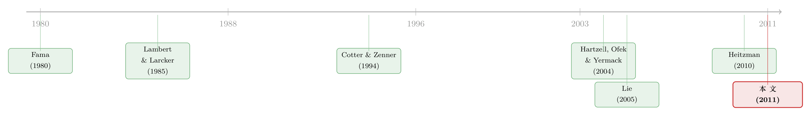

最后一分钟的两百万股期权：当目标公司 CEO 在谈判桌底下「自己给自己发薪」
本文读的是 Fich, Cai & Tran (2011, Journal of Financial Economics)：在私下并购谈判进行期间，约七分之一的目标公司会突击给 CEO 发一笔「计划外」股票期权；这笔期权替代了金降落伞、补偿了 CEO 因卖掉公司而损失的未来薪酬，结果是——交易更容易成交，但目标股东拿到的溢价更低。算到最后，目标 CEO 每从这笔期权里赚到 1 美元，交易总价值就缩水近 62 美元，而收购方的股东反倒赚到了更高的收益。一句话：这是一场从目标股东到收购方股东的财富转移。
1 一笔没写进「并购大事记」的期权
先讲一个故事。
2007 年 12 月 30 日，电子数据系统公司（EDS）的 CEO Ronald Rittenmeyer 和惠普（HP）的 CEO Mark Hurd 见了一面。Hurd 透露，HP 有兴趣收购 EDS。此后双方进入秘密的尽职调查与谈判。到 2008 年 5 月 13 日，HP 公开宣布以 132.5 亿美元收购 EDS。
这一切，都规规矩矩地写进了 EDS 向美国证监会（SEC）提交的代理声明书里那一节叫「并购背景（merger background）」的流水账中。但有一件事，那份流水账没有提：2008 年 2 月 13 日——也就是秘密谈判正酣的时候——Rittenmeyer 拿到了一笔计划外（unscheduled）的股票期权，整整两百万股 EDS 股票。这笔授予比他过去任何一次正常授予都大十倍以上。等 HP 完成收购，它给 Rittenmeyer 带来的利润超过 1300 万美元。
作者把这笔利润算得很清楚：用并购报价减去行权价（$25.00 − $18.30），再乘以授予股数（两百万股），就是 1340 万美元。
这就是本文要讲的那个「悬念」：这笔最后一分钟、悄无声息塞进 CEO 口袋的期权，到底是个孤例，还是一种普遍现象？如果普遍，它在替谁办事——是 CEO，是股东，还是收购方？
2 先把这件事「数」出来
要回答这些问题，第一步是把现象本身钉死。
作者收集了 1999–2007 年间 920 起以美国上市公司为目标的并购竞标。样本来自 SDC 的并购数据库，再要求目标公司同时有 CRSP、Compustat、RiskMetrics 的股价、财务与治理数据——从最初的 4,459 起一路筛到 920 起。这批交易里，约 82% 最终完成，53% 为现金收购，近 90% 是善意并购，平均交易规模 46.67 亿美元，目标公司平均市值 33.59 亿美元。这些数字都和 Bates and Lemmon (2003)、Officer (2003) 等前人的样本对得上，说明样本没有明显偏态。
关键在于怎么定义「计划外」。作者的规则很朴素：如果一笔期权授予的日期，落在上一次授予的「一周年纪念日」前后 14 天之内，就算计划的（scheduled）——这是公司例行的、程序化的薪酬；否则就算计划外的。区分这两者至关重要，因为例行授予和并购大概率没什么关系，真正可疑的是那些不按节奏冒出来的授予。
数出来的结果是：在 920 个目标公司里，超过 13%（约七分之一）在私下谈判期间给 CEO 发了计划外期权。作为对照，在一个庞大的非并购公司样本里，计划外期权的发生率不到 9%。
注意这个对照的妙处：如果计划外期权只是公司日常薪酬的正常波动，那并购公司和非并购公司的发生率应该差不多。可前者比后者高出近一半。这说明，「并购」这件事本身，把这种授予「催」了出来。
那么，一个自然的问题是——它到底在替代什么？
3 它替代了「金降落伞」
要理解这笔期权的角色，得先认识它的「老前辈」：金降落伞（golden parachute）。
金降落伞是写进高管雇佣合同里的一项条款，约定一旦公司控制权变更、或高管被解雇，他能拿到一笔补偿。但这里有个微妙的差别：降落伞的金额通常挂钩 CEO 的年度现金薪酬（工资加奖金），和收购报价无关；而股票期权的价值，会随着收购报价水涨船高。换句话说，降落伞给的是一笔「固定补偿」，期权给的是一份「与成交价挂钩的看涨敞口」。
作者由此提出一个可检验的假说：这些最后一分钟的计划外期权，是金降落伞的替代品。如果真是替代关系，那降落伞越薄的公司，越倾向于用期权来补。
数据印证了这一点。回归显示，平均降落伞每减少 100 万美元，授予计划外期权的概率就上升 2.31 个百分点。降落伞和期权之间，确实存在此消彼长的替代弹性。
接着，作者把视角转向「补偿」这个动机。CEO 卖掉公司，意味着放弃了未来本可以拿到的工资、奖金和股权——这就是所谓的预期损失薪酬。按照 Fama (1980) 著名的「事后结算（ex post settling up）」逻辑，公司有动机在事前补偿 CEO 这部分损失，好让他别因私利而拖累交易。结果同样清晰：当 CEO 预期的损失薪酬每增加 1000 万美元，他拿到计划外期权的概率就上升 11 个百分点。
还有第三块拼图：控制权变更条款（change-in-control clause）。这个条款一旦触发，期权的归属期（vesting period）和各种限制就统统消失，CEO 可以在交易完成的瞬间把期权变现。数据显示，CEO 合同里有这个条款时，公司发放计划外期权的概率高出 3.4 个百分点。逻辑顺理成章：有了这把「即时变现」的钥匙，临门一脚塞进来的期权才有意义。
到这里，故事的上半场已经讲完：这是一笔在程序最不透明的时刻发放、替代降落伞、补偿 CEO 损失、并且设计成可以马上变现的期权。
但真正关键的一步在于下半场——它对交易本身、对各方财富，到底意味着什么？
4 它真的「推」着 CEO 把公司卖掉了吗？
如果这笔期权确实在「贿赂」CEO 去促成交易，那我们应该看到：拿了期权的交易，更容易成交。
事实正是如此。控制了其他因素后，当目标 CEO 在谈判期间拿到计划外期权，交易完成的概率高出近 12 个百分点。这个量级不小——要知道，样本里交易完成的无条件概率是 81.8%，12 个百分点的提升足以让一桩本来悬而未决的交易落地。期权确实在「推动」CEO 卖掉自己的公司。
于是反转出现了。交易更容易成交，听起来像是好事——可问题是，这笔交易对目标股东划算吗？
5 谁赚了，谁亏了
答案令人不安。
作者发现，那些在谈判期间给 CEO 发了计划外期权的目标公司，拿到的收购溢价低了约 4.4 个百分点。换算成钱，这意味着这些公司在出售时，交易价值平均缩水约 2.15 亿美元。
与此同时呢？目标 CEO 从这些期权里平均赚到近 350 万美元的利润。
把这两个数字摆在一起，作者算出了全文最刺眼的那个比率：目标 CEO 每从计划外期权里赚到 1 美元，交易总价值就减少近 62 美元。 这是一种极其失衡的财富分配——CEO 用股东的两百多个亿，换来了自己口袋里的几百万。
第一眼看上去，这简直就是赤裸裸的「自肥」：CEO 受益，股东受损。但作者很克制地提醒：还有一种替代解释。低溢价也可能意味着这些本来就是「低质量」的目标——和潜在买家协同效应有限的公司。如果是这样，那么计划外期权反而可能在帮股东：没有这个激励，CEO 可能根本懒得把这家「难嫁」的公司卖出去。
这个替代解释能不能被排除？这恰恰是本文识别策略里最漂亮的一手，我们下一节细说。但先把财富的账算完：作者去看了收购方的收益。如果目标是低质量的，那么收购方付的钱少、买到的东西也差，收购方的收益不该更高。可数据显示——收购方的股东收益反而高出约 2 个百分点。
这就把「低质量目标」假说彻底掀翻了。收购方既付得少、又赚得多，唯一一致的解释是：财富从目标股东手里，转移到了收购方股东手里，而中间那个按下「成交」按钮的人，是拿了期权的目标 CEO。
6 识别策略：自选择是绕不开的坎
讲到这里，必须诚实地面对一个问题：发不发计划外期权，并不是天上掉下来的随机分配。
会发期权的公司，本身可能就有某种特殊性——也许它们更急着卖、也许治理更差、也许 CEO 议价能力更强。这种自选择（self-selection）会污染所有的估计：你看到「发期权 → 低溢价」，可能只是因为「会发期权的公司本来溢价就低」。
作者的应对，是在交易完成率和溢价的回归里都用上 Heckman (1979) 的两步法（two-step method），显式地为「是否发放计划外期权」这一决策建模、再把由此产生的选择偏差（用逆米尔斯比率）放回主回归里控制掉。这也是本文方法上区别于同期工作论文 Heitzman (2010) 的一个要点——Heitzman 把股票授予和期权混在一起、且不区分计划内外，而本文专注于「计划外」这一刀，并用 Heckman 处理内生的授予决策。
真正撑起因果叙事的，其实不是 Heckman 本身（它依赖排除约束这个难以证伪的假设），而是上一节那个收购方收益的检验。它像一个内置的「证伪测试」：如果低溢价来自低质量目标，收购方收益该低；可它偏偏高了。两个相反方向的预测，数据选择了「财富转移」那一边。这种用一个独立可观测变量去排除竞争性解释的设计，比任何统计修正都更有说服力。
不过我们也要清醒：这终究是一个横截面相关的故事，不是一个干净的准自然实验。本文没有外生冲击、没有断点、没有 DiD，所谓「识别」更多是「在尽可能控制混淆后的稳健相关」。这一点在最后的评论里我还会再提。
7 一条关于「退出薪酬」的研究暗线
把镜头拉远，本文坐在一条已经走了三十年的研究脉络上。
最早的源头是 Fama (1980) 的「事后结算」思想：经理人市场会在事后修正高管的薪酬，因此公司有动机在并购时补偿 CEO 的损失。紧接着，Lambert and Larcker (1985) 开启了对金降落伞的实证研究，发现市场对降落伞的设立给出正面反应，把它解读为缓解代理冲突的工具。
然后，研究者开始追问降落伞和并购结果的关系，但证据是混乱的：Machlin, Choe, and Miles (1993) 认为降落伞提高了成交概率，Cotter and Zenner (1994) 则认为真正起作用的是经理人自己的股权收益、而非降落伞的赔付。

但真正把「退出薪酬伤害股东」这件事讲透的，是 Hartzell, Ofek, and Yermack (2004)：他们发现，当目标 CEO 在并购前临时增厚自己的降落伞、或被收购方许诺留任时，目标股东拿到的溢价更低。Wulf (2004) 在「对等合并」里也讲了同一个故事——CEO 用权力换溢价。Bargeron, Schlingemann, Stulz, and Zutter (2009) 则直接问：目标 CEO 是不是为了保住饭碗而出卖了股东？与此并行的，是 Grinstein and Hribar (2004)、Bliss and Rosen (2001) 对并购奖金（merger bonus）的研究，以及 Lie (2005)、Aboody and Kasnik (2000) 那条关于「期权授予时机被操纵」的支线。
本文的位置，正是把这两条线接到一起：它研究的「计划外期权」既是退出薪酬（像降落伞），又是被择时的期权（像 Lie 笔下那些可疑的授予），而且发生在信息披露最不透明的并购谈判窗口里。它把前人零散的发现，拧成了一个完整的财富转移叙事。
（关于「期权授予/交易时机是否真的『提前安排好』就清白」这个争议，可参见《「提前安排好」就等于「没用内幕消息」吗？——拆开 Rule 10b5-1 的三道后门》；而关于高管在「雷达之下」悄悄交易自家股票，可参见《雷达之下：不必申报的高管，在自家股票上赚了多少？》。）
8 评论与延伸（Q&A + 研究方向）
(a) 几个可能的疑问
Q：「计划外」这个定义会不会太机械，把一些正常授予误判进来？
14 天窗口确实是个硬规则，难免有误差。但它的好处是客观、可复制，不依赖研究者的主观判断。而且作者用「非并购公司发生率不到 9%、并购公司超过 13%」这个对照，间接说明被这套规则抓出来的授予里，确有相当一部分是并购催生的、而非例行的噪声。
Q：既然 CEO 拿了期权、又拿了降落伞，会不会重复计算他的「补偿」？
不会。作者明确指出期权和降落伞是替代关系（降落伞每少 100 万、期权概率升 2.31 个百分点），并在估计损失薪酬时扣掉了并购奖金、在替代弹性回归里控制了奖金规模。逻辑是「这几样东西共同把 CEO 补到位」，而非各自独立叠加。
Q：发期权让交易多成交 12 个百分点，难道不也可能是好事——把本来卖不掉的公司卖出去？
这正是「低质量目标」假说。作者用收购方收益把它否掉了：低质量目标对应收购方低收益，可数据里收购方收益反而高 2 个百分点。所以更可能的解释不是「救活了烂交易」，而是「贱卖了好资产」。
Q：每 1 美元对应 62 美元的「失衡」，是不是被极端值带偏了？
这个比率是两个平均量级相除（约 2.15 亿美元的交易价值损失 ÷ CEO 约 350 万美元的利润，量纲上对得起 62 倍这个数）。它要传达的是「失衡的方向与数量级」，而非一个精确的弹性。即便打个对折，结论依然成立：股东的损失远大于 CEO 的所得。
Q：这算内幕交易吗？为什么没人被起诉？
作者讨论了这个法律灰区：1934 年证券法的 16(b)、10(b) 条禁止在掌握重大非公开信息时买卖证券，但「授予期权」在法律上不构成「购买」（Anabtawi, 2004），所以严格说没有触犯内幕交易法。本文的政策含义恰恰在此——它暴露了证券法在「择时授予」上的漏洞。
Q：本文能算因果吗？
谨慎地说，不能算严格因果。它用 Heckman 处理自选择、用收购方收益排除竞争性解释，做到了横截面研究能做的极致；但没有外生冲击或断点，本质仍是「控制混淆后的稳健相关」。把它读成「强有力的相关证据 + 一个被证伪测试加固的机制故事」最为恰当。
(b) 几个可能的研究问题与提案
1. 把「计划外授予」搬到债权人视角
【经济故事】股东在这类交易里吃了亏，那持有目标公司债券的债权人呢？并购往往改变杠杆与信用风险，若 CEO 被期权激励去促成一桩对收购方有利的交易，债券价格（CDS 利差）会怎么动？这是一条把高管薪酬与信用市场打通的暗线。 【可行性】中。需要
TRACE债券成交数据或MarkitCDS 数据匹配本文的并购样本，识别上可用并购公告作为事件窗口做事件研究。难点是有公开债的目标公司样本会缩小。
2. 2006 年 Rule 14d-10 安全港修订作为准自然实验
【经济故事】文中提到，2006 年 10 月 SEC 修订 Rule 14d-10(a)(2)，为目标董事会的薪酬委员会在要约收购中提供安全港。这等于在样本中段降低了这类授予的法律风险——一个潜在的政策断点。修订前后，计划外授予的发生率、规模、以及对溢价的侵蚀，是否系统性变化？ 【可行性】高。本文样本恰好横跨 2006 年，做一个以 2006Q4 为节点的前后对比（甚至 DiD，按目标公司是否处于要约收购情形分组）是现成的。识别依赖修订的「外生性」，需论证它不是对既有趋势的内生回应。
3. 外资股东能不能挡住这种财富转移？
【经济故事】计划外授予的本质是治理失灵。那么治理更强势的股东——比如积极的境外机构投资者——在场时，这种授予是否更少、或对溢价的侵蚀更小？外资持有人常被认为带来更强的监督。 【可行性】中。需要
FactSet/13F加上国别持股数据匹配本文样本。识别上可借助指数纳入等外生变动作为外资持股的工具。样本期内跨境持股数据的覆盖度是主要约束。
4. 计划外授予与并购后的长期表现
【经济故事】如果这些交易是「被贿赂出来」的低质量交易，那么收购方在并购完成后的长期经营与股价表现，应当系统性更差——尽管它们短期公告收益更高。短期赢、长期输的背离，会是对「财富转移」叙事的有力补充。 【可行性】高。用
Compustat的并购后经营业绩（Barber and Lyon, 1996 式的异常经营表现）和买入持有异常收益即可。难点是长期收益检验本身的统计功效与基准选择争议。
9 我的判断
这篇论文最大的贡献，是把一个原本「藏在抽屉里」的现象做成了可测量、可统计的事实。在它之前，「目标 CEO 在谈判期间突击拿期权」只是 EDS-HP 这类轶事；本文用 920 起交易、一个客观的「计划外」定义、以及一组层层递进的检验，证明了这是个非平凡的、普遍的、且伤害股东的现象。尤其是「收购方收益更高」这一击，干净利落地把「低质量目标」这个最自然的反驳排除掉，让「财富转移」的叙事站住了脚。它对高管薪酬的有效性、对并购期间信息披露的及时性、乃至对证券法漏洞的政策含义，都讲得克制而有力。
我对识别的主要担忧仍是：这终究是横截面证据。Heckman 两步法依赖排除约束，而文中用作选择方程识别的变量，其「只影响是否授予、不直接影响溢价」的外生性，是无法被证明的。换句话说，我们看到的「发期权 → 低溢价」，仍可能残留某种未被观测的公司特质（比如急于求成的董事会文化）在背后同时驱动两者。本文用收购方收益做的证伪测试缓解了这一点，但没有根除它。
如果让我提一个最想看到的后续，那就是找一个真正外生的冲击——上面提到的 2006 年 Rule 14d-10 安全港修订就是个现成的候选——把「相关」推向「因果」。再往前一步，则是顺着债权人和外资股东这两条线，看看在「治理更强」的环境里，这扇被悄悄打开的后门能不能被关上。毕竟，一笔需要在最后一分钟、最不透明的时刻才塞给 CEO 的期权，本身就说明了一件事：他平时的薪酬合同，并没有把激励放对地方。
参考文献
Aboody, D., Kasnik, R. (2000). CEO stock option awards and the timing of corporate voluntary disclosures. Journal of Accounting and Economics 29, 73–100.
Anabtawi, I. (2004). Secret compensation. North Carolina Law Review 82, 835–890.
Bargeron, L., Schlingemann, F., Stulz, R., Zutter, C. (2009). Do target CEOs sell out their shareholders to keep their job in a merger? Unpublished working paper, The Ohio State University.
Bates, T., Lemmon, M. (2003). Breaking up is hard to do? An analysis of termination fee provisions and merger outcomes. Journal of Financial Economics 69, 469–504.
Bliss, R., Rosen, R. (2001). CEO compensation and bank mergers. Journal of Financial Economics 61, 107–138.
Cotter, J., Zenner, M. (1994). How managerial wealth affects the tender offer process. Journal of Financial Economics 35, 63–97.
Fama, E. (1980). Agency problems and the theory of the firm. Journal of Political Economy 88, 288–307.
Grinstein, Y., Hribar, P. (2004). CEO compensation and incentives: evidence from M&A bonuses. Journal of Financial Economics 73, 119–143.
Hartzell, J., Ofek, E., Yermack, D. (2004). What's in it for me? CEOs whose firms are acquired. Review of Financial Studies 17, 37–61.
Heckman, J. (1979). Sample selection bias as a specification error. Econometrica 47, 153–161.
Heitzman, S. (2010). Equity grants to target CEOs during deal negotiations. Working paper 1482008, SSRN.
Lambert, R., Larcker, D. (1985). Golden parachutes, executive decision making, and shareholder wealth. Journal of Accounting and Economics 7, 179–203.
Lie, E. (2005). On the timing of CEO stock option awards. Management Science 51, 802–812.
Machlin, J., Choe, H., Miles, J. (1993). The effects of golden parachutes on takeover activity. Journal of Law and Economics 36, 861–876.
Officer, M. (2003). Termination fees in mergers and acquisitions. Journal of Financial Economics 69, 431–467.
Wulf, J. (2004). Do CEOs in mergers trade power for premium? Evidence from mergers of equals. Journal of Law, Economics, and Organization 20.